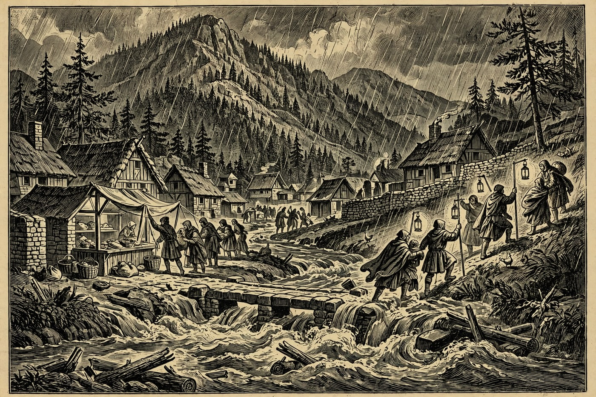
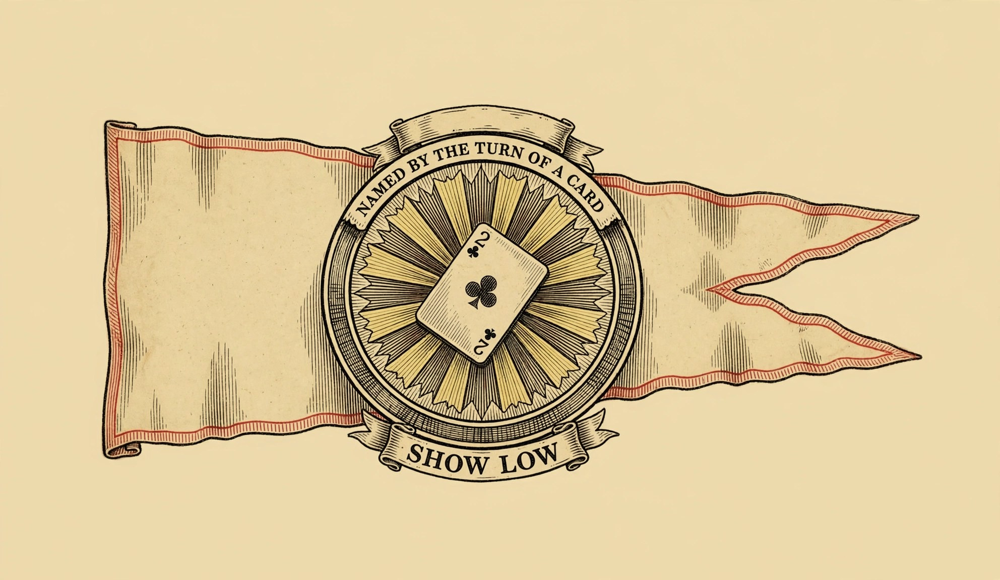

Hail, wayfarer, and mind the crossings — Morndas dawns grey and cool over the Rim, and the waters are still up after Sunday’s storm. The National Weather Service in Flagstaff kept a Flood Warning in force until 8:00 AM today, Monday, November 2, for parts of Gila, Coconino, and Yavapai counties, after 2 to 5 inches of rain fell across the warned country. Flooding was reported around Payson, Pine, Strawberry, and the Tonto Creek country, roads were closed at low-water crossings, and on Sunday afternoon parts of Gisela and Tonto Basin were told to evacuate to higher ground. Northland Pioneer College said all its campuses would not open until 11:00 AM today because of the flooding. So the Hearth’s counsel is plain and warm: stay off the crossings, never drive around a barricade, and let the creeks settle — the mead hall is dry, the cats are dry, and there is a full week of markets, music, trail work, and mountain bikes ahead once the water goes down.
Happening in the Holds Today
 Payson— “Got Sneakers” Recycle and Fundraiser begins today, Monday, November 2, and runs through November 19 in the Payson Unified School District. Old sneakers that might have gone to the midden instead get a second road to run, and the drive raises funds along the way. It is an easy good deed for guests with a spare pair in the wagon — ask at a school office where the collection stands. A small quest, honestly, but the best kind: one anybody can finish before supper.— A Quiet Morndas in the Hold — after Sunday’s flood waters, Payson’s verified calendar for today is deliberately light, and that is no shame in it. The creeks are still settling, the Flood Warning ran until 8:00 AM, and the wise traveler spends the day on high, dry ground. Warm up in a cafe, browse the shops on Main Street, and let the road crews do their work unhurried. The Holds will be lively again by the weekend, as The Days Ahead below can testify.
Payson— “Got Sneakers” Recycle and Fundraiser begins today, Monday, November 2, and runs through November 19 in the Payson Unified School District. Old sneakers that might have gone to the midden instead get a second road to run, and the drive raises funds along the way. It is an easy good deed for guests with a spare pair in the wagon — ask at a school office where the collection stands. A small quest, honestly, but the best kind: one anybody can finish before supper.— A Quiet Morndas in the Hold — after Sunday’s flood waters, Payson’s verified calendar for today is deliberately light, and that is no shame in it. The creeks are still settling, the Flood Warning ran until 8:00 AM, and the wise traveler spends the day on high, dry ground. Warm up in a cafe, browse the shops on Main Street, and let the road crews do their work unhurried. The Holds will be lively again by the weekend, as The Days Ahead below can testify.
Show Low— Story Time at Show Low Public Library meets on Mondays in the Kids Room at the Show Low Public Library, the city’s own live feed says. Little travelers get stories read aloud in a warm, dry room while the grown folk rest their boots — a gentle way to start a grey week. It is made for young children and the people who bring them, and it costs nothing but attention. Call the library at 928-532-4070 for the day’s hour before you ride over. Prescott— Prescott Farmers Market sets up today, Monday, November 2, from 9:00 AM to 1:00 PM at Yavapai College, 1100 E. Sheldon Street in Prescott. Local farmers, ranchers, bakers, and makers bring fresh produce, meats, eggs, bread, and ready-to-eat treats to the tables. Entry is free, and SNAP/EBT and farmers market nutrition benefits are accepted, the market’s own word says. Valley Dwellers riding up for Rim Country air will find it a fine first stop of the week.— Fairweather Social Club gathers today, Monday, November 2, in Prescott, listed on the Prescott 365 events calendar. Expect the friendly machinery of a social club done right: drinks, company, and the easy talk of neighbors glad to see each other after a wet weekend. It is a traveler-friendly evening — come as you are, find a seat, and let somebody else pour. Check the Prescott 365 listing for the day’s hour and hall before you set out.— BINGO — Mondays at Jersey Lilly Saloon starts at 6:00 PM tonight at 116 S. Montezuma Street, Suite A, in Prescott. The cards come out, the caller warms up, and a room full of hopefuls leans over the same numbers with very different luck. It is old-fashioned, cheerful, and exactly the sort of Monday mischief a mead hall would approve of. Arrive a little early to claim a good seat and a drink before the first call.
Prescott— Prescott Farmers Market sets up today, Monday, November 2, from 9:00 AM to 1:00 PM at Yavapai College, 1100 E. Sheldon Street in Prescott. Local farmers, ranchers, bakers, and makers bring fresh produce, meats, eggs, bread, and ready-to-eat treats to the tables. Entry is free, and SNAP/EBT and farmers market nutrition benefits are accepted, the market’s own word says. Valley Dwellers riding up for Rim Country air will find it a fine first stop of the week.— Fairweather Social Club gathers today, Monday, November 2, in Prescott, listed on the Prescott 365 events calendar. Expect the friendly machinery of a social club done right: drinks, company, and the easy talk of neighbors glad to see each other after a wet weekend. It is a traveler-friendly evening — come as you are, find a seat, and let somebody else pour. Check the Prescott 365 listing for the day’s hour and hall before you set out.— BINGO — Mondays at Jersey Lilly Saloon starts at 6:00 PM tonight at 116 S. Montezuma Street, Suite A, in Prescott. The cards come out, the caller warms up, and a room full of hopefuls leans over the same numbers with very different luck. It is old-fashioned, cheerful, and exactly the sort of Monday mischief a mead hall would approve of. Arrive a little early to claim a good seat and a drink before the first call.
The Days Ahead
- Tue, Nov. 3— Trail Day Volunteer Build in Pine, Tuesday, November 3, from 7:00 AM to 12:00 PM, off Highway 87 just before Pine. Pine-Strawberry Fuel Reduction calls hikers, bikers, and runners to clear brush, move rocks, and shape a trail that will serve the Hold for years — and double as a fire-access route. Tools are provided; bring water, gloves, and sturdy shoes, and email trails@psfuelreduction.org for directions. No experience needed, only willing hands.— Snakes! Lizards! Tortoises! on Tuesday, November 3, from 11:00 AM to 12:00 PM at Creative Gateways / Kuivato Gallery, Tlaquepaque North, 336 AZ-179 in Sedona, and it is free. Visitors get a hands-on hour with desert reptiles, including Riggs the desert tortoise, a creature with more patience than most jarls. It is a splendid hour for curious children and grown travelers alike. Come learn which neighbors wear scales, and why they deserve respect, not fear.
- Wed, Nov. 4— Wildflower Walk on Wednesday, November 4, from 10:00 AM to 12:00 PM at the Highlands Center for Natural History, 1375 S. Walker Road in Prescott. A guide leads walkers through the highland woods to see what the season still offers after the rains, at a pace made for looking closely. The walk is free, and an RSVP is required, the center’s calendar says. Wear sturdy shoes and bring water — the trails will still remember the weekend’s weather.
- Fri, Nov. 6— Sedona Mountain Bike Festival opens Friday, November 6, at 9:00 AM at Posse Grounds Park, 525 Posse Grounds Road in Sedona, and runs through Sunday, November 8. Riders descend on Sedona’s famous red singletrack for demo rides and guided group rides, with food trucks, a beer garden, and live music between runs. Even travelers who never mount a bike will enjoy the festival air. By the Nine, it is the biggest wheel-show in the Holds this week.— Small Works Show — Opening Reception on Friday, November 6, from 4:00 to 7:00 PM at Mountain Trails Gallery in Tlaquepaque, Sedona, and it is free. Paintings, sculpture, and mixed-media works by the gallery’s award-winning artists fill the walls, including new work for the holiday season. Animal artist Sarah Webber demonstrates the next day, Saturday, November 7, from noon to 4:00 PM. The show itself runs through December 31.— Anthony Mazzella — Legends of Guitar plays Friday, November 6, at 7:00 PM at the Prescott Elks Theater in Prescott. Mazzella’s fingers do the traveling — a concert of guitar legends reimagined by one of Arizona’s best-known players, in a grand old theater made for live music. Bard-work of the highest order, and a fine Friday night out for Hearth guests. Tickets are through the theater and its listings, so claim seats before the hall fills.— First Friday Fish Fry and Bingo on Friday, November 6, at the Pine Strawberry Community Center, 3916 AZ-87 in Pine. Fish is served from 4:30 PM — dinners at $7, $12, and $15, with homemade pie for $5 — and bingo starts at 6:00 PM. It is the twin villages’ own mead-hall night: hot food, sweet pie, and numbers called over a happy room. Come hungry, bring small bills, and may your card be luckier than Earl’s antlers.
- Sat, Nov. 7— Hike for Hounds Fall Festival on Saturday, November 7, from 9:00 AM in Prescott, a fall festival built around a good hike with good dogs. Travelers and their four-legged companions get fresh air, festival company, and the satisfaction of a walk that helps animals in need. It is the sort of wholesome quest the Hearth loves to send guests on. Bring water for both ends of the leash, and check the festival listing for the trailhead before you go.